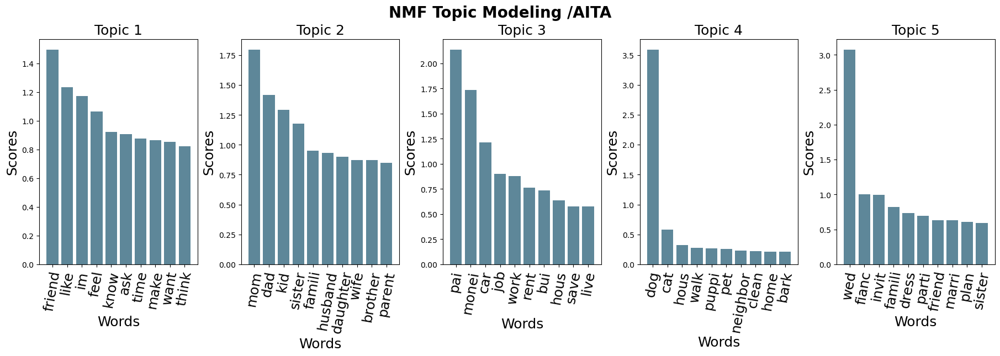
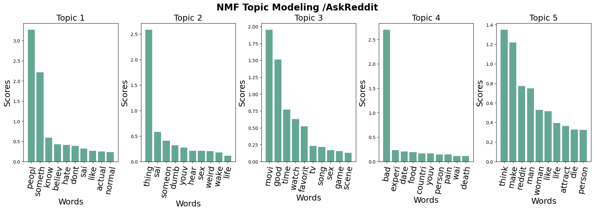
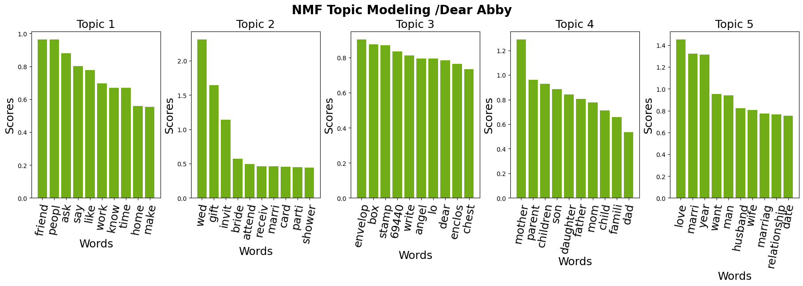

Conclusion
Summary of Key Insights
Our analysis of advice-seeking platforms revealed fascinating patterns across Reddit subreddits (AmItheAsshole, AmIOverreacting, and AskReddit) and the Dear Abby advice column. By combining Exploratory Data Analysis (EDA), Natural Language Processing (NLP), and Machine Learning (ML), we identified significant differences in how users express themselves, seek validation, and respond to community judgments.
- Platform Dynamics: Reddit’s popularity far surpasses that of Dear Abby, with individual subreddits like AskReddit generating more posts per month than the entirety of Dear Abby’s dataset. This highlights the rise of digital platforms as the primary space for modern advice-seeking behaviors.
- Topic and Sentiment Analysis: Our topic modeling uncovered thematic similarities between AITA, AIO, and Dear Abby, centered around relationships, friendships, and family dilemmas. However, AskReddit stood out with more generalized and diverse topics, reflecting its broader user base. Sentiment analysis revealed that certain themes, like pets or family issues, tend to elicit more negative responses, while weddings and marriage evoke relatively positive sentiment.
- Predictive Modeling: Using Random Forest and XGBoost models, we demonstrated that community judgments can be predicted with reasonable accuracy based on features like post sentiment, topics, and engagement metrics. Feature importance analysis highlighted post score and number of comments as critical predictors across subreddits.
These findings provide valuable insights into the evolving dynamics of advice-seeking, illustrating how platform structure and audience engagement influence the content and tone of online discourse.
Supporting Figures
The following figures illustrate the key findings from our analysis across Reddit subreddits and the Dear Abby dataset.
Monthly Post Counts (Reddit v. Dear Abby)
These first two graphs compare the volume of posts on Reddit and Dear Abby, highlighting the overwhelming dominance of Reddit as a platform for advice-seeking. The data shows how individual subreddits like AskReddit and AmItheAsshole far exceed the monthly activity of the traditional Dear Abby column.
Topic Modeling Across Platforms




The next four graphs demonstrate the results of topic modeling using Non-Negative Matrix Factorization (NMF) for AmItheAsshole, AmIOverreacting, AskReddit, and Dear Abby. These figures reveal thematic consistency across AITA, AIO, and Dear Abby, with common topics like relationships and friendships, while AskReddit showcases more diverse and generalized themes.
Sentiment and Judgment Correlation:

The final graph explores the relationship between sentiment scores and community judgments in AmItheAsshole. It illustrates how topics like weddings and marriage often correspond to positive sentiment and lenient judgments, while posts about friends and pets are more likely to receive harsh criticism.
Planned Next Steps
Time-Based Analysis
Although our project has provided rich insights, the data we analyzed was limited to specific timeframes (2023–2024 for Reddit, 1985–2017 for Dear Abby). Expanding the dataset to include broader time ranges would enable a longitudinal analysis of advice-seeking behaviors and their evolution over time.
Advanced Predictive Models
While our Random Forest and XGBoost models achieved reasonable performance, exploring deep learning approaches, such as transformers or attention-based architectures, could improve predictive accuracy by capturing more complex relationships between features.
Expanding Subreddit Analysis
Currently, our analysis focused on three subreddits. Incorporating additional subreddits, such as r/relationship_advice or r/legaladvice, could provide a more comprehensive view of Reddit’s advice-seeking ecosystem and uncover unique patterns in niche communities.
Exploring Cultural and Demographic Trends
Future work could analyze cultural or demographic variations in advice-seeking behaviors by incorporating metadata such as geographic location (if available) or inferred user demographics.
Final Reflections
Our project demonstrates the power of combining EDA, NLP, and ML to analyze large-scale text data from advice-seeking platforms. By bridging traditional advice columns like Dear Abby with modern online communities, we have highlighted the societal shifts in how people seek and give advice. The results reveal not only evolving trends in digital discourse but also provide a deeper understanding of the cultural and emotional dynamics shaping these platforms.
With these findings, we are poised to extend this work further, exploring new dimensions of advice-seeking behaviors and their implications for online platforms and societal trends.